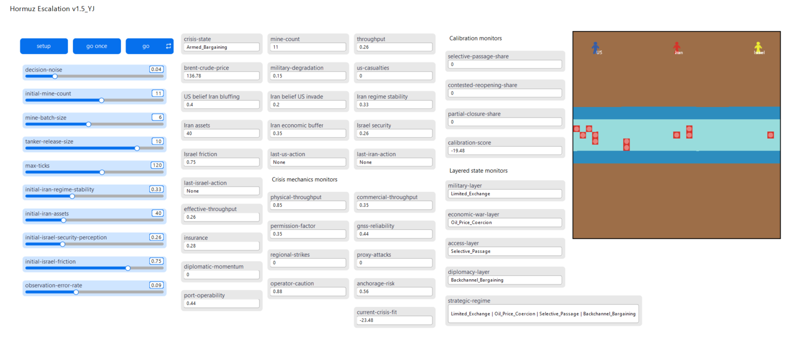
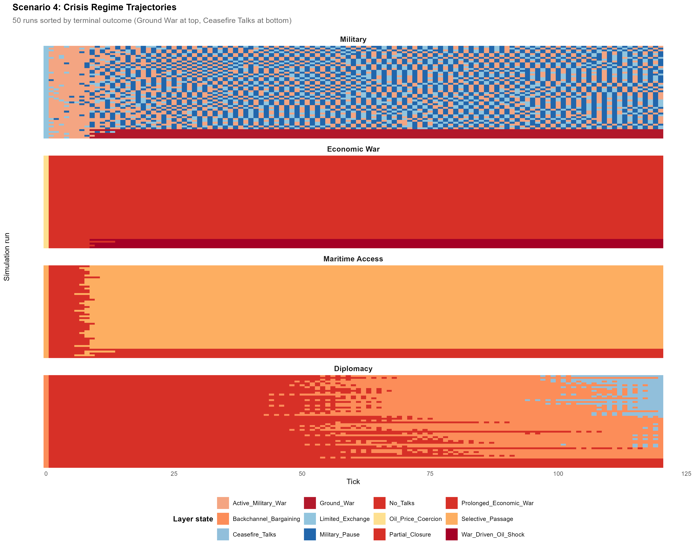
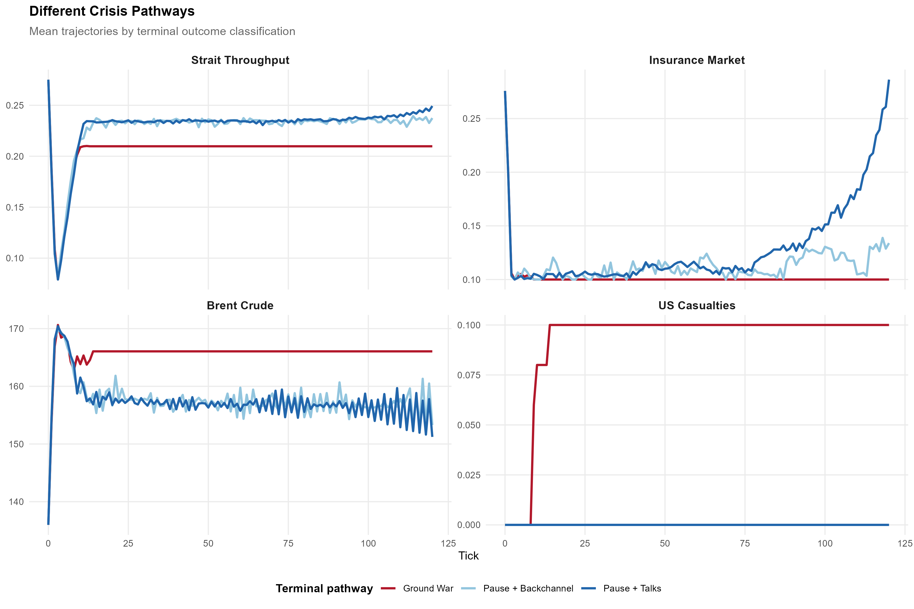
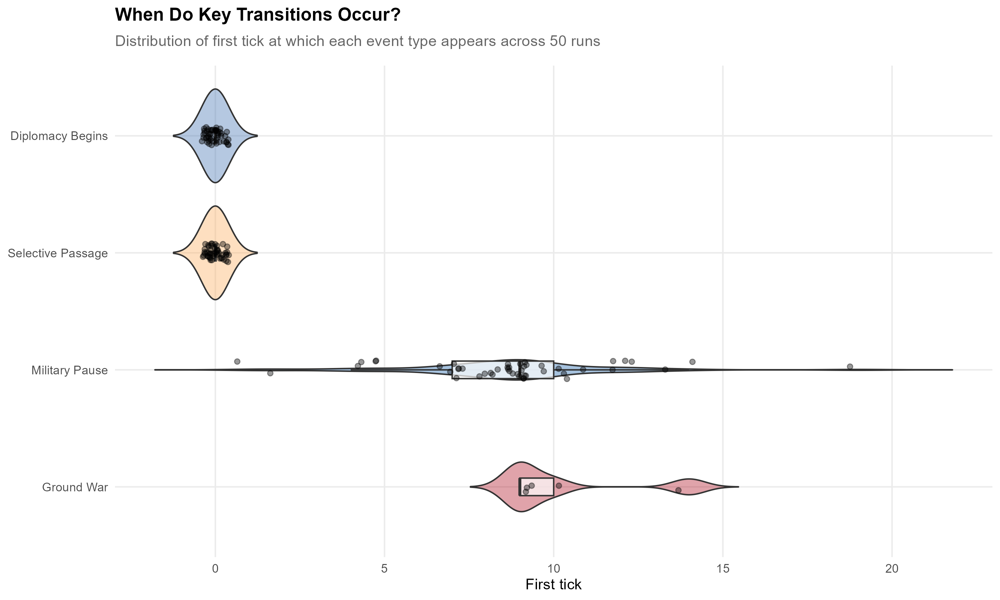
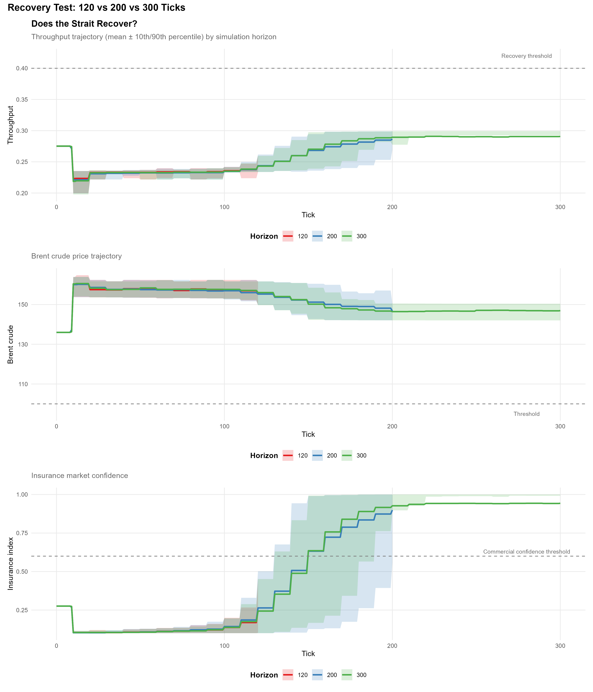
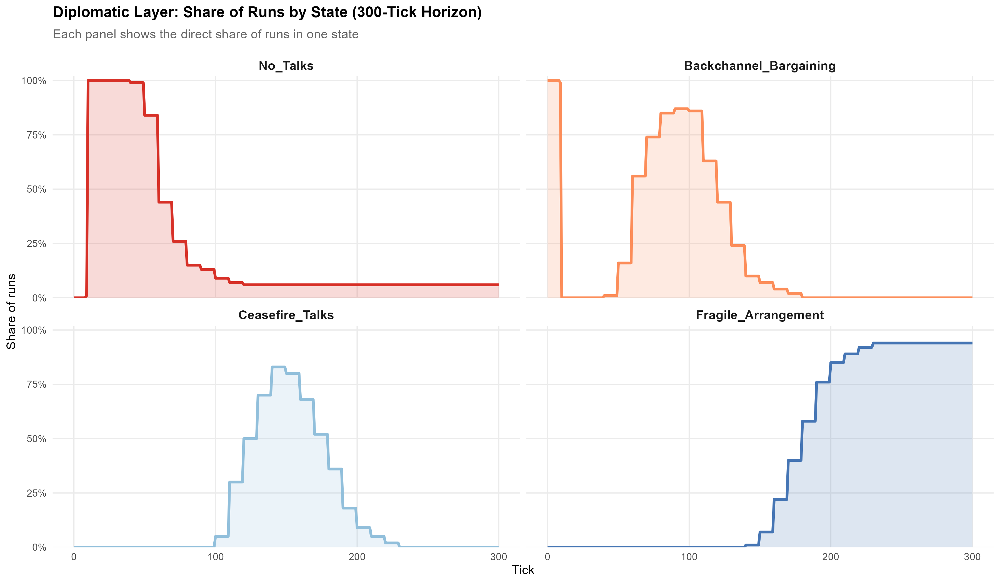
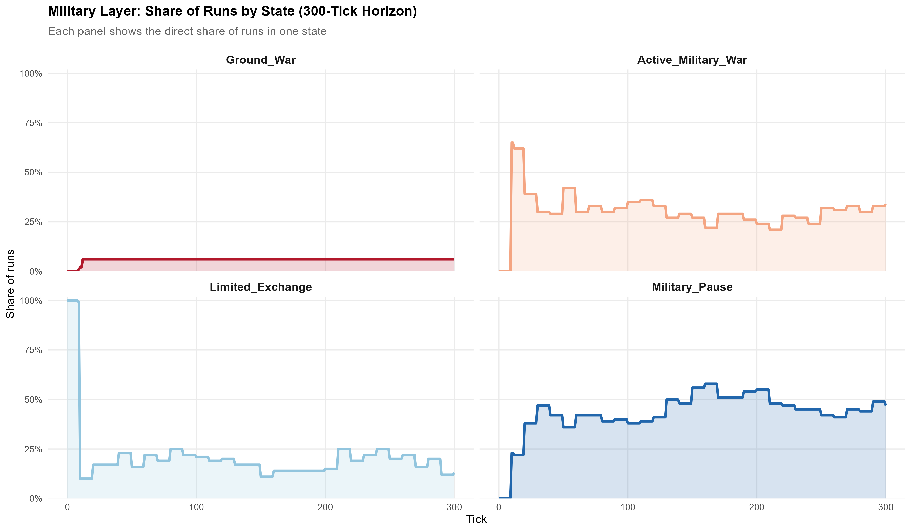
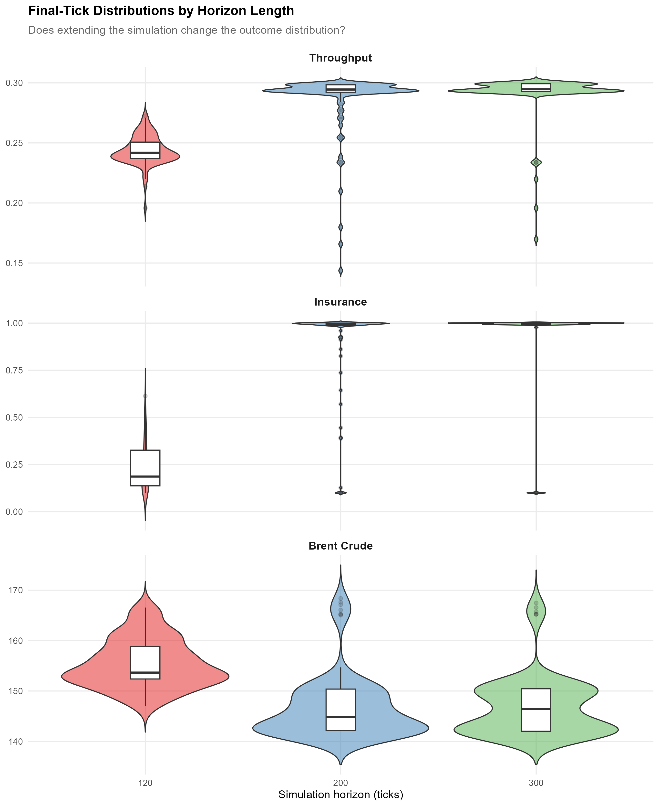

Computational Modeling of the 2026 U.S.–Israel–Iran Conflict (Managed Stalemate at the Strait)

Introduction: The Epistemological Trap
As of late March 2026, the Middle East stands at a critical geopolitical crossroads. Following coordinated U.S.–Israeli airstrikes on Iran, the region entered a conflict whose consequences extended far beyond the battlefield. Iran retaliated asymmetrically and effectively closed the Strait of Hormuz to much of international shipping, turning a military confrontation into a crisis of energy, access, and market stability. In such an environment, the central analytical problem is not simply that the crisis is dangerous. It is that it is extraordinarily difficult to think rigorously about it in real time.
Analysts confronting an active multi-theater conflict face an epistemological trap. The strategic environment is saturated with interconnected variables: alliance pressure, military signaling, oil prices, shipping disruption, insurer confidence, domestic political constraints, and bargaining under uncertainty. In the fog of crisis, what is abundant is qualitative information — fragmented intelligence, official statements, expert commentary, and continuous news coverage. What is scarce is the kind of stable quantitative evidence that conventional statistical forecasting generally requires. By the time rich data exist, the crisis itself has already passed.
That is why an agent-based model is useful here. The point of the model is not to replace evidence with simulation. It is to formalize strategic reasoning when evidence remains partial and fragmented. Instead of asking whether the crisis ends in “war” or “peace,” the model asks a more disciplined question: under what conditions does military de-escalation fail to produce commercial normalization? The answer that emerges is clear. Under current structural conditions, full resolution is exceptionally rare. What emerges more readily is a layered equilibrium of managed stalemate.
A Layered Model of Coercion
The model departs from binary conflict frameworks by representing the crisis as a four-layer process. At each tick, the simulation classifies the system into a military layer, an economic-war layer, a maritime-access layer, and a diplomacy layer. The military layer distinguishes military pause, limited exchange, active military war, and ground war. The economic-war layer distinguishes oil-price coercion, prolonged economic war, and war-driven oil shock. The maritime-access layer distinguishes selective passage, partial closure, and contested reopening. The diplomacy layer distinguishes no talks, backchannel bargaining, ceasefire talks, and fragile arrangement.
This layered structure is critical because the crisis does not move in lockstep across domains. A reduction in direct violence does not automatically restore maritime access. Improved access does not necessarily produce normal diplomacy. The model is designed to allow those domains to diverge — and the simulations show that they often do. Scenario 4 (I tested several scenarios) is especially useful because it is not an easy-peace scenario and not a maximal-war scenario. It is best understood as a de-escalation-friendly but normalization-resistant case: uncertainty is relatively low, Israeli pressure is real but not overwhelming, Iranian coercive capacity is substantial but not maximal, and bargaining over passage remains possible. That makes it the best setting for testing my essay’s central question: whether military de-escalation can occur without full commercial normalization.
In Scenario 4, the dominant endpoint is not resolution but selective passage under prolonged economic war. Military pause appears frequently, but it does not define all non-ground-war runs; the model also sustains limited exchange and active military pressure alongside bargaining and incomplete access normalization. The model’s asymmetry is deliberate. Selective passage is easier to sustain than contested reopening. Full ceasefire requires a demanding conjunction of restored throughput, high insurer confidence, reliable navigation, rising diplomatic momentum, Israeli security above threshold, and Iranian regime stability above its survival floor. Selective passage, by contrast, survives under much looser conditions. That is not a technical quirk. It encodes the substantive proposition that coercive access control is structurally easier to sustain than full commercial normalization.
Formal Modeling: Asymmetric Utilities, Belief Updating, and Chokepoint Throughput
To clarify the strategic structure of the model, the NetLogo simulation can be represented as a stylized three-actor stochastic game embedded in a maritime chokepoint.
Let the strategic actors be
$$
N = \{U, I, Z\},
$$
where \(U\) denotes the United States, \(I\) denotes Iran, and \(Z\) denotes Israel. At each tick \(t\),
the crisis is described by the layered state
$$
L_t = (M_t, E_t, A_t, D_t),
$$
where \(M_t\) is the military layer, \(E_t\) the economic-war layer, \(A_t\) the maritime-access layer, and \(D_t\) the diplomacy layer.
The overall strategic regime is a mapping
$$
R_t = \Gamma(M_t, E_t, A_t, D_t).
$$
Each actor chooses an action from an actor-specific set by maximizing expected utility under stochastic decision noise:
$$
b_{i,t+1} = \frac{P(e_t \mid H)b_{i,t}} {P(e_t \mid H)b_{i,t} + P(e_t \mid \neg H)(1-b_{i,t})}.
$$
In the model, Bayesian updating is most explicit in two places: the U.S. updates its belief that Iran is bluffing, and Iran updates its belief that the U.S. will invade. Israel also updates perceptions, but those updates are heuristic rather than fully Bayesian. This distinction matters because the crisis is not only a problem of material damage. It is also a problem of interpretation. Mine deployment, shipping harassment, selective passage, and missile escalation do not communicate the same thing. They shift beliefs differently. The model therefore simulates action under conditions of inference and misperception.
The key material variable is effective strait throughput, which the model treats not as a purely physical measure but as the interaction of physical navigability, commercial conditions, navigational reliability, and political permission. In stylized form: $$ T_t^{eff} \approx T_t^{phys} \cdot A_t^{climate} \cdot R_t, $$ where \(A_t^{climate}\) is a weighted composite of commercial throughput, navigational reliability, and political permission, and \(R_t\) is a recovery factor. Brent crude(\(B_t\)) then rises as effective throughput falls and crisis panic increases: $$ B_t = \bar{B} + \alpha (1 - T_t^{eff}) + \beta \Pi_t. $$ This is the mechanism through which the model captures chokepoint leverage: oil is not merely an outcome of war, but a strategic channel of coercion.
The model’s central proposition can therefore be stated directly: $$ \text{Military de-escalation} \nRightarrow \text{commercial normalization}. $$ More concretely, the model readily generates layered configurations such as $$ M_t = \text{Military_Pause},~ E_t = \text{Prolonged_Economic_War},~ A_t = \text{Selective_Passage}, $$ showing how military restraint, economic coercion, and constrained maritime access can coexist.
Pathway Analysis and Event Timing
A model of this complexity should not be evaluated solely by its terminal state. The most interesting theoretical content lies in the temporal pathway: when selective passage appears, when diplomacy begins, when military pause becomes possible, and why a subset of runs collapses into ground war. The revised analysis therefore shifts attention from end-state frequencies to trajectories.

Figure 1 visualizes 50 runs of Scenario 4 as layered trajectories sorted by terminal outcome. The ordering makes the pattern legible: ground-war runs cluster at the top, while more bargaining-oriented runs appear lower in the figure. The most striking result, however, is not the military layer. It is the rigidity of the economic-war layer. The economic layer is overwhelmingly locked in prolonged economic war even while the military and diplomacy layers evolve more variably.

Figure 2 compares the canonical pathways: ground war, pause plus backchannel, and pause plus talks. Ground-war runs generate early casualties and settle into a sharply degraded equilibrium with low throughput, low insurance, and very high oil prices. The pause-oriented runs do not move toward normality in any simple sense. Throughput improves only modestly, insurer confidence improves strongly over time, and Brent crude remains well above normal levels. What separates a “better” run from a catastrophic one is not simply its final label. It is the sequence through which the layered domains decouple.

Figure 3 makes this chronology explicit. Selective passage and diplomacy begin at tick 0 across the sample. Military pause tends to emerge later, around ticks 7 to 9. Ground war, when it occurs, generally arrives between ticks 8 and 15. This means that the first phase of the crisis is structurally similar across pathways. Bifurcation occurs only later, around the point at which military pause either consolidates or fails. In theoretical terms, bargaining does not wait for complete calm, and selective access control becomes institutionalized before the military layer actually settles.
The Long-Horizon Test: Delayed Recovery or Blocked Recovery?
The strongest evidence for the managed-stalemate thesis comes from the long-horizon comparison at 120, 200, and 300 ticks. If the model were merely slow to normalize, then giving it more time should generate open passage, restored throughput, falling oil prices, and a decisive diplomatic transition. That is not what happens.

Figure 4 shows the key result. Over longer horizons, insurance recovers dramatically. Brent crude declines from its earlier crisis peak. Yet throughput never crosses the 0.40 recovery threshold. By the 300-tick horizon, insurance approaches roughly 0.94, while throughput rises only from about 0.24 to about 0.29. The asymmetry is unmistakable: the route becomes more trusted than it becomes open. No run achieves meaningful full recovery in physical access.
This is my essay’s most important finding. The principal bottleneck is no longer only market fear. It is persistent physical and political contestation: mines, permissions, and selective access control. The crisis therefore resolves economically without resolving physically. The long-horizon test refines the model’s strongest claim. The simulations do not imply endless collapse. They imply incomplete recovery.


Figures 5 and 6 reveal a crucial cross-layer divergence in the crisis process. Over time, a larger share of runs moves in the military layer toward military pause, while the diplomatic layer increasingly concentrates in fragile arrangement. But these shifts should not be mistaken for full normalization. They indicate movement away from immediate escalation, not a return to stable peace. The system becomes less overtly violent and more diplomatically organized, yet it remains far from restored commercial confidence or settled political order.
This divergence lies at the core of the model’s argument: military de-escalation and diplomatic structuring can occur without producing durable settlement, commercial normalization, or a genuine restoration of regional stability.

Figure 7 reinforces this visually. The final-tick distributions by horizon show that insurance shifts dramatically upward as the horizon lengthens, while throughput moves only modestly. Brent declines, but not toward a genuinely normal range. Confidence recovers; access does not.
The Structural Asymmetry of Utilities and Historical Memory
The model demonstrates why a crisis of this kind settles into layered coercion rather than clean resolution. The three actors face fundamentally different incentive structures, and it is the collision of those structures — not the behavior of any single actor — that produces the managed-stalemate equilibrium.
The United States seeks an off-ramp because its utility declines as oil prices rise, casualties accumulate, and domestic political costs grow. But even if Washington enforces a military pause, it cannot unilaterally halt the economic war. Only Tehran holds the keys to the chokepoint.
Iran does not need a battlefield victory to preserve leverage. Selective passage and economic warfare remain useful precisely because they keep pressure on global markets while avoiding the regime-threatening costs of a U.S. ground invasion. Iran’s strategy is not to win the kinetic war. It is to make the economic consequences of continued conflict costlier than the concessions required to end it.
Israel remains hawkish because incomplete degradation of Iran remains strategically unsatisfactory. From Jerusalem’s perspective, any settlement that leaves Iranian coercive capacity intact is not a resolution but a deferral.
These colliding asymmetries generate the model’s central result: military de-escalation does not imply commercial normalization. The conclusion also has a temporal dimension. Commercial actors eventually adapt. Insurers learn to price the new normal. Markets stop treating every day of disruption as a fresh shock. But physical and political access remain much harder to normalize. That lag is what allows oil and time to function as strategic weapons. The crisis need not be kinetically victorious to be strategically effective. Selective passage, constrained throughput, and partial market adaptation can themselves become an equilibrium.
What the Model Shows — and What It Does Not
The model should not be read as a deterministic forecast of catastrophe. Its contribution is narrower and stronger. It shows why clean resolution is structurally difficult. Under the conditions represented here, the most plausible equilibrium is neither simple war nor full peace. It is managed stalemate, characterized by military pause or limited exchange, selective passage, prolonged economic war, and fragile diplomatic arrangement.
That claim is persuasive precisely because it is not a point prediction. The model does not say that the future must unfold in only one way. It says that, given this strategic architecture, full normalization is rare, while layered coercive stability is common. The critical decoupling is not accidental. It is produced by actor asymmetries, imperfect observation, chokepoint structure, and the unequal pace at which markets and physical access recover.
Conclusion
The most important implication of this analysis is conceptual rather than predictive. Chokepoint crises cannot be understood as if the only relevant question is whether states escalate or de-escalate militarily. In the Strait of Hormuz, access control, insurer confidence, operator caution, and oil-price politics can outlast and outpace the military layer. That is why the model reframes resolution itself. What matters is not only whether violence falls, but whether access normalizes.
In these simulations, that normalization rarely occurs. Military pause, ceasefire talks, and fragile arrangement may emerge, but they do so alongside continued economic coercion and selective Iranian passage. Over time, the route may become more trusted, but it does not become fully open. That is not a failure of the model. It is the model’s strongest theoretical insight into the future of geoeconomic warfare.
Appendix : Brief ODD(Overview, Design concepts, and Details) Protocol
1 Purpose
The model explains how a Strait of Hormuz crisis can evolve into layered coercive equilibrium rather than simple war or peace. It examines how military de-escalation can coexist with continued economic war, selective passage, and incomplete diplomatic stabilization. The model is explanatory rather than point-predictive. Its central analytical question is not “does the crisis end?” but “how does coercive access control persist even when battlefield intensity declines?”
2 Entities, State Variables, and Scales
Entities: three strategic actors (United States, Iran, Israel), mine agents, and a patch-based maritime environment with shipping lanes.Actor variables: risk tolerance, security perception, regime stability, alliance friction, and key beliefs about bluffing and invasion.
System variables: physical throughput, commercial throughput, permission factor, insurance, GNSS(Global Navigation Satellite System) reliability, military degradation, U.S. casualties, Brent crude price, diplomatic momentum, the four layered regime states, and persistence counters for selective passage, partial closure, and reopening.
Scale: one tick is interpreted as approximately one day.
3 Process Overview and Scheduling
Each tick follows the same sequence: observe with noise, update beliefs, select actions, execute actions, update market and access conditions, classify the four layers, update persistence counters, and check stop conditions. This ordering matters because crisis outcomes are path-dependent.
4 Design Concepts
Emergence: the main emergent outcome is a layered strategic regime in which military pause, prolonged economic war, selective passage, and fragile arrangement can coexist.Adaptation: actors adapt by choosing actions according to changing utilities.
Sensing: actors do not perfectly observe one another; perception is filtered through observation error.
Stochasticity: uncertainty enters through both observation error and decision noise.
5 Initialization
The model begins from an already-active crisis: commercial stress, low insurer confidence, preexisting mines, and coercive pressure. Initial conditions therefore represent a conflict already underway rather than a peaceful pre-crisis baseline.
6 Input Data and Calibration
The model is anchored by scenario calibration against plausible crisis signatures: elevated Brent prices, depressed throughput, weak insurance confidence, persistent selective passage, and military pause without full normalization. Trajectory analysis and long-horizon comparison are then used to evaluate whether the model reproduces those layered crisis dynamics.
7 Submodels
Belief updating: Bayesian inference from noisy perceived actions.Utility-based decision: menu evaluation under stochastic noise.
Maritime access: physical throughput multiplied by commercial and political constraints.
Layer classification: threshold-based classification into military, economic-war, access, and diplomacy layers.
Persistence tracking: streak and cumulative counters used to identify durable regimes.